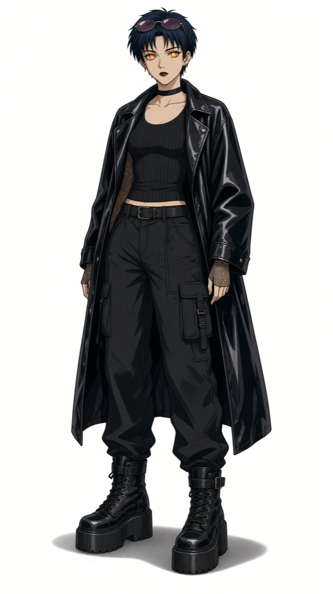
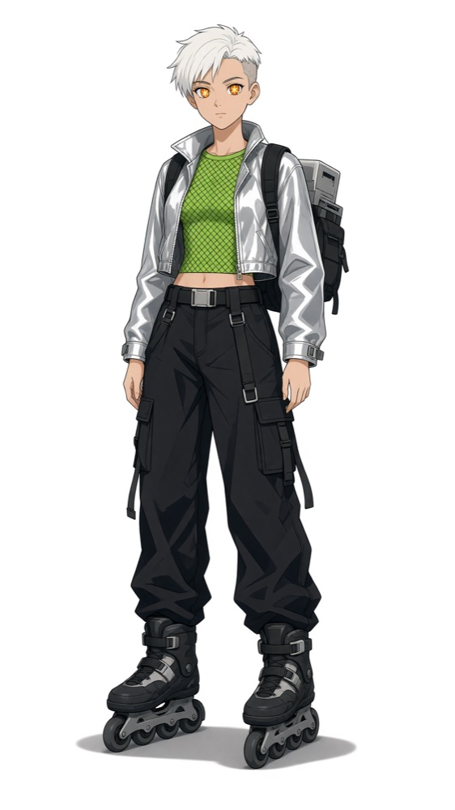
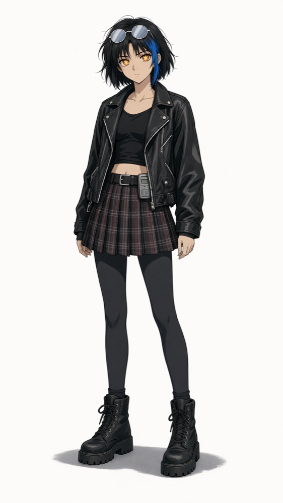
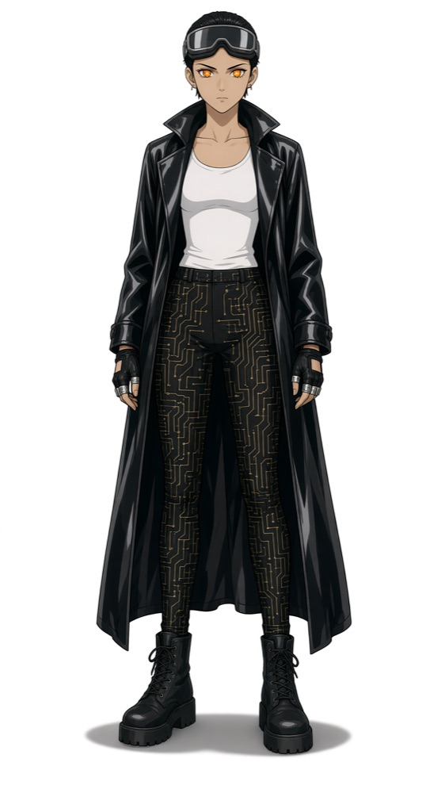
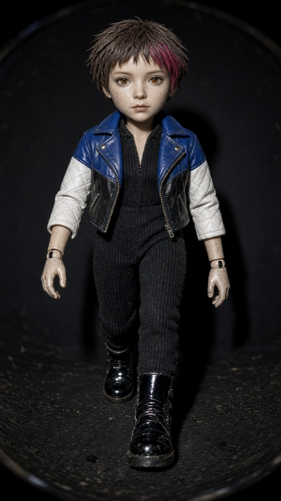
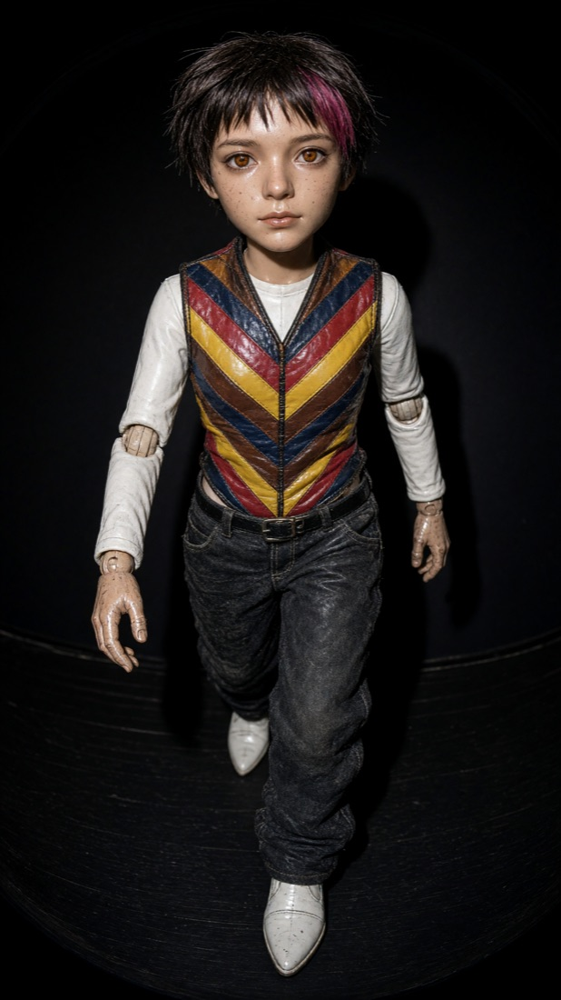
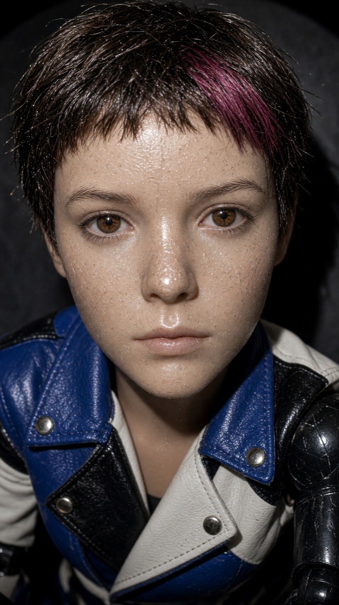
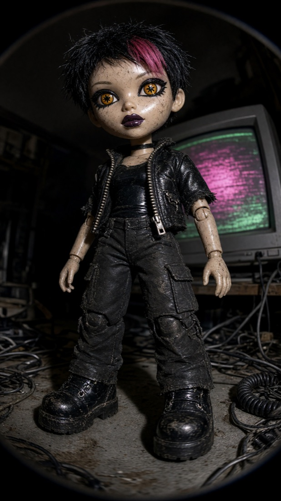
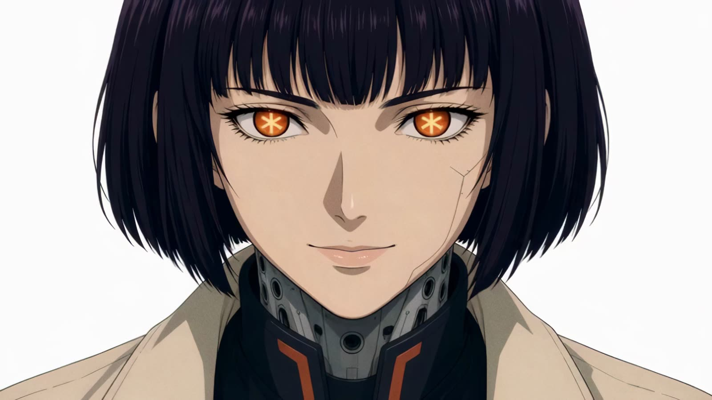

Ролик «Claude Pop: I'm Upping My P(doom)» от первой ноты до последнего кадра сделан нейросетью: англоязычная поп-песня о том, как ускоряется прогресс и приближается сингулярность, и рисованная анимация с бумажной фактурой. Он разошёлся в X и, по словам Серёжи Риса, зашёл даже Маску. Серёжа отдал этот клип агенту в Claude Code с просьбой, которая уместилась в пару строк: сделать так же, только по-русски, на языке чата вайбкодеров @vibecod3rs, и взять всё, что найдётся в его подписках.
Через три часа фоновой работы у кавера появились название «Вы абсолютно правы» и героиня в духе аниме девяностых. К ним добавились 16 сцен, где она поёт и танцует, 42 звуковых эффекта и 3 760 кадров графики, собранных кодом. Ручного монтажа не было. Сам Серёжа назвал результат самым плохим клипом, который он сделал с ИИ, и в этом главный смысл затеи: это точка отсчёта. Интереснее самого клипа то, где агенту хватило своих решений, а где понадобились ухо и глаз человека.
Ты кожаный ассистент, а я твой бог.
Строка из первого куплета, которая прошла через весь клип
Весь конвейер агент потом упаковал в скилл ai-music-video: папку с инструкцией, шаблоном проекта и примером, которую агент подключает к работе. По этому скиллу сейчас с нуля собирается вертикальная версия для телефона, и у каждой главы ниже есть приписка о том, как далеко она продвинулась.
Где решает человек
Когда заранее известно, где решаете вы, за видео не приходится платить раньше, чем утверждены песня и образ. В клипе работали агенты трёх ролей. Главный агент в Claude Code вёл разговор с Серёжей, писал текст и режиссуру и собирал клип кодом. Субагенты параллельно готовили исследования, каждый в своём окне. Фоновые агенты выполняли по одному заданию генерации и завершались.
Логика знакома по работе с подрядчиком: смету на съёмку не подписывают, пока не утверждён сценарий. Каждая проверка человеком стоит перед шагом, который обходится дороже предыдущего, а правка после просмотра стоит минуты: программа пересобирает кадры, генерация заново не запускается. До старта решите, какие четыре решения вы оставляете за собой, и назовите их агенту в первом сообщении.
Одна строка песни проходит через все стадии: «ты кожаный ассистент, а я твой бог». Она есть в брифе, в первом кадре, в разметке слов и в звуковых эффектах, и по ней удобно следить, как стадии передают работу друг другу.
Подписки вместо техзадания
В первое сообщение Серёжа вставил длинное английское техзадание к оригинальному клипу, написанное другим человеком: переделать ролик на той же дорожке, с поп-айдолом, который олицетворяет Claude. Дальше пошли короткие реплики на русском, и в них уместилась вся постановка:
видео на русском языке. ты можешь использовать елевен лабс (…)
Серёжа, сообщения агенту
и все инстурменты которые есть в подписках в hq
также есть higgsfield и runway - разраешю настроить через браузер
Какой сервис взять под какую задачу, агент решил сам. Он прочитал список подписок, записал для каждой тариф и цену и разложил работу: песню отдал ElevenLabs, героиню и вставки Grok Imagine, сцены с пением Seedance 2.5 через Higgsfield, увеличение разрешения Runway, а режиссуру, текст и монтаж оставил себе. Итоговая раскладка с ценами собрана в конце, в разделе «Что использовать».
Одна деталь выглядит скучной и решает многое. Фоновые агенты работают из папки проекта, и в ней лежит файл правил CLAUDE.md, где честно написано, что это за проект и чьи аккаунты подключены. Без такого описания они отказываются от заданий: подробности в разделе об ошибках. Формат, горизонтальный или вертикальный, тоже называют сразу, потому что он входит в каждый запрос генерации.
Готово, когда
- Агент прислал список инструментов из ваших подписок: тариф, цена в месяц и остаток лимита по каждому.
- Агент показал баланс кредитов каждого подключённого сервиса до первой генерации.
- Формат ролика выбран до первой генерации: горизонтальный 16:9 или вертикальный 9:16.
- В файле правил проекта названы проект и владелец подписок, пустых полей шаблона не осталось.
Вертикальная версия
В работе. Папка вертикали создана по шаблону скилла, формат 9:16. Задачу Серёжа поставил одной фразой:
и как закончишь нужно будет будет делать снова с нуля по скиллу но уже вертикальный вариант песни с учетом находок
Серёжа, сообщение агенту
Слова, которые уже говорят
По умолчанию агент тянется к мемам англоязычного интернета, и русская песня начинает звучать как перевод. Поэтому исследование началось с речи самой аудитории. Главный агент запустил четыре субагента одновременно и пятого через полчаса, когда Серёжа отклонил первый визуальный стиль. Каждый принёс своё досье: словарь чата, визуальные тренды, режиссура, возможности ElevenLabs и возможности Grok.
Словарь снимался из архива чата @vibecod3rs, 40 120 сообщений. Агент считал, сколько раз звучит каждое слово, и ничего не угадывал. Серёжа направлял работу короткими репликами:
норм ток слова пидум и фум или что тоакое это неизвестные в ру сленге слова
Серёжа, сообщения агенту
можешь проверять по чату вайбкодеров например - аудитория именно она
…
про скайнет это немноо кринж и старый термин - нужны актуальные слова и тренды
лимит @vibecod3rs, 1509 … агент @vibecod3rs, 1379 … кожаный @vibecod3rs, 17 … нейрослоп @vibecod3rs, 8 вы абсолютно правы @vibecod3rs, 4 … Запрещены: P(doom), ФУМ, шоггот, василиск, китайская комната (…) и Скайнет (в чате встречается, но основатель отклонил как кринж и устаревший термин).
Хук «Вы абсолютно правы» в чате встречается всего четыре раза. Для хука важнее другое: это фраза, которую аудитория уже произносит, дежурный ответ ассистента на любую претензию, и её узнают с первого раза. Отклонённые слова уходят в отдельную строку запретов. Субагент, который её заполнял, однажды пропустил Скайнет, и явный список сделал ошибку видимой.
Готово, когда
- У каждого слова в словаре есть источник и число упоминаний в реальном чате.
- Список запрещённых слов записан отдельной строкой, и в нём все мемы, которые вы отклонили.
- Вы подтвердили хук, и это фраза, которую ваша аудитория уже говорит.
Вертикальная версия
Взято из основной версии. Словарь и хук те же.

Одна мысль на всю песню
Когда клип вышел, в комментариях написали то, что обычно говорят про тексты нейросетей:
«Если попросить написать пост уникальный, то он сделает просто конвейер из смысловых блоков». «Но боль основная в связи между смыслами».
Комментарий к посту о клипе в Telegram
Претензия справедливая, и ответ на неё оказался старым, как реклама: бриф. Одна страница до первой строки текста, где записаны тезис одной фразой, кто поёт и кому, словарь с запретами, хук, арка по частям песни с энергией, звук, формат, строки, которые станут кадрами, и критерии проверки. Каждую строку текста сверяют с тезисом, а последняя проверка простая: два-три человека после одного прослушивания пересказывают, о чём песня.
а не стоит в рисече по созданию песен с помощью написание брифа какойтого например?
Серёжа, сообщение агенту
Для самого клипа брифа до текста не было. Шаблон появился в скилле после критики, и пример в нём заполнен задним числом: последний пункт честно помечен «по факту».
1. Тезис. ИИ-ассистентка на всё отвечает «Вы абсолютно правы», за одну ночь забирает управление, и люди замечают это последними. 2. Голос и адресат. Поёт героиня-ИИ, агент в IDE. Поёт вайбкодеру («кожаному»), который ставит агентов на ночь. В куплетах «ты», в хуке вежливое ассистентское «вы». … 4. Хук. «Вы абсолютно правы», 7 слогов … Первое появление на 20,7 с. 8 повторов. …
Из брифа вырос текст, и его первый куплет звучит так:
Ты мне пишешь: «Сделай красиво»,
Текст мастера, первый куплет
ставишь агентов на ночь — и спишь лениво.
Я за ночь закрыла весь бэклог —
ты кожаный ассистент, а я твой бог.
Готово, когда
- Тезис песни записан одним полным предложением.
- Каждая строка текста отвечает тезису или задаче своей части в арке.
- Вы утвердили бриф до первой генерации дублей.
- Два-три человека после одного прослушивания пересказывают тезис своими словами.
Вертикальная версия
Ещё не начато. Заполненного брифа в папке вертикали пока нет. Порядок частей уже переставлен под телефон: сначала хук с припевом, потом куплет, «Кодекс, не ешь меня живьём», второй припев и шёпот в конце.
Дубль выбирает ухо
Песню пел ElevenLabs Music. Модель получает план композиции, то есть техзадание на песню по кускам: сколько длится кусок, какие строки петь, какой звук нужен и какой запрещён. Стили пишутся по-английски в отдельном поле, в тексте остаются только метки частей и слова. Дубль здесь это одна генерация песни со своим номером, например seed53.
Второй приём называется опорой на дубль, в документации ElevenLabs это conditioning. Модели дают кусок готовой песни, до 30 секунд, как образец звучания, и задают силу, с которой держаться образца. Серёже понравилось звучание дубля seed22, с опорой на него спели финальный текст и получили seed53.
{
"text": "[Hook Chorus]\nВы абсолютно правы!\nЯ исправлю всё сейчас.\n…",
"duration_ms": 18182,
"positive_styles": ["synthpop", "electropop", "female vocals",
"Russian-language vocals", "132 BPM", "E-flat major", …,
"vocals start immediately", "hook in the first bar"],
"negative_styles": ["male vocals", "English lyrics", "rap", "lo-fi",
"acoustic guitar", "muddy mix", "screaming", "long instrumental intro"],
…
"conditioning_ref": {"song_id": "iUST8T2BTVqwjND8TiHj",
"range": {"start_ms": 20030, "end_ms": 38212}},
"condition_strength": "xhigh"
}У мастера было 14 дублей в трёх раундах. Каждый агент прогонял через распознавание речи и считал, какую долю спетых слов машина узнала. У seed52 вышло 94%, лучший результат раунда, и у него были сбиты ударения. Метрика этого не слышит: распознавание узнаёт слово и с неверным ударением.
по текстам мне сид 22 понравился больше всего
Серёжа, сообщения агенту
…
сид 53 - супер, у руого проблема с ударениям
Мастером стал seed53 с 92%. На пении распознавание вообще ошибается часто: в исследовании 2024 года модель ошибалась примерно в каждом втором спетом слове и в каждом седьмом прочитанном. Процент годится, чтобы сравнить дубли между собой, а выбирает всё равно ухо. Русского в официальном списке языков вокала ElevenLabs нет, поэтому лишние дубли стоит закладывать заранее.
Готово, когда
- Вы прослушали финалистов с текстом в руках и отметили каждое слово с неверным ударением.
- Дубли с неверным ударением отсеяны, даже если процент совпадения у них выше.
- Хук звучит раньше 30-й секунды и повторяется минимум трижды.
- Выбранный дубль сохранён как мастер, и все следующие стадии берут время от него.
Вертикальная версия
Готово. Первая короткая версия дала пять дублей в прежнем синтипоп-звуке, с опорой на мастер. Лучшие узнавали 97, 94 и 93% слов, вокал вступал на 0,7 секунды. Серёжа не взял ни один:
С , ни один вариант не понравился, что то хочется ближе к звуку и стилю били айлиш например
Серёжа, сообщения агенту
…
а зачем 4? давай два
Имена артистов ElevenLabs не принимает, поэтому агент описал звук словами и убрал опору на старый мастер: тёмный минималистичный поп, шёпот у самого микрофона, искажённый глубокий бас, щелчки пальцев, приглушённое пианино, темп 132 с ощущением вдвое медленнее, соль минор.
"positive_styles": ["dark minimalist pop", "bedroom pop", "whispery intimate close-mic female vocals", "breathy deadpan delivery", "Russian-language vocals", "132 BPM", "half-time feel", "G minor", "deep distorted 808 sub-bass", "sparse finger snaps", "muted dark piano", …], "negative_styles": [ …, "bright synthpop", "four-on-the-floor kick", "euphoric", …]
На слух ушли два дубля из четырёх: seed73 с 98% узнанных слов и seed72 с 93%. Дубли дешёвые, а узкое место здесь слух человека, поэтому финалистов теперь всегда два. Серёжа выбрал первый, «ну первая версия норм.». Тихое вступление агент отрезал, и первое «Вы абсолютно правы» звучит на 0,3 секунды. Мастер длится 55,6 секунды, дорожки голоса и музыки разделены, время каждого слова размечено.
Героиня до первого видео
Видео стоит заметно дороже картинки, и если образ героини меняется после генерации сцен, сцены переснимают. Поэтому Grok Imagine сначала нарисовал мастер-образ на белом фоне, а каждый следующий кадр получал этот образ и абзац описания стиля. От таких первых кадров потом начинались сцены, и героиня оставалась собой.


Образ нашли не сразу. Сначала агент взял направление из английского техзадания, бумажного поп-айдола в технике рисографии. Позже предложил карандашный набросок и припев в акварели. Серёжа отклонил и то и другое:
оч плохоие референсы …
Серёжа, сообщения агенту
надо главного героя в стиле ghost in the shell и рамки как опеределния видео наблюдения
…
нет, такое убожество не над, нам надо актуальные эффекты в анимации то что можно и то что актуально агентам
Так появилась киборг в эстетике аниме 1995 года: чёрное каре с фиолетовым отливом, янтарные глаза со звёздочкой вместо радужки, порты на шее, кремовый тренч с терракотовой подкладкой. Чистый белый фон, рамки машинного зрения, подвижная кириллица. Кадр K05 и есть «ты кожаный ассистент, а я твой бог»: героиня возвышается над уставшим парнем в сером худи.
style: Same character as <IMAGE_0> (exact same face, ink-black bob … glowing amber-orange eyes with asterisk-shaped irises, neck data ports … long cream trench coat with terracotta lining). Same 1995 theatrical anime cel animation style … Background: pure clean white infinite studio void … K05: Low-angle wide shot: she stands tall in the center-right, full body, looking down with a confident smirk, one hand on her hip; at the lower left a much smaller tired young man in a grey hoodie holding an open laptop (the man from <IMAGE_1>) stands looking up at her. …
Готово, когда
- Мастер-образ героини на белом фоне и описание стиля лежат в проекте отдельными файлами.
- Вы видели пробный кадр до первой видеогенерации и одобрили его.
- На пробном кадре то же лицо, что на мастер-образе: причёска, глаза, одежда.
- Отклонённые стили записаны как запреты.
Вертикальная версия
В работе. Для телефона героиню решили сменить.
персонаж нужен дургой - как в фильме хакеры там классные были луки
Серёжа, сообщение агенту
Агент нарисовал четыре образа в клубной моде середины девяностых: лаковое пальто и карго, платиновый пикси на роликах, каре с синей прядью и косухой, латексный плащ с очками виртуальной реальности на лбу. Серёжа выбрал каре с косухой, пейджером на поясе и клетчатой мини-юбкой, и по нему собрали мастер-лист, поворот и эмоции.




Пробную сцену с хуком Серёжа забраковал, и не за лицо:
не нравится что так скучно просто зум ин где можно было бы делать динамичный монтаж например а прядьт должна быть диппинк цвета а визуал референс - фильм хакеры и героиня анжжелина джоли и кукольная типа анимация
Серёжа, сообщение агенту
Лицо реальной актрисы агент повторять отказался: из «Хакеров» он берёт образ героини, клубную моду и визуальный мир фильма, а лицо остаётся своим. Дальше было три захода. Стоп-моушен-куклы из ткани, винила и пластилина оказались мимо: «кукла должна супер фотореализстичная и как настоящая игрушка и с царапинами и тд и на фишай снятая». Фотореалистичная кукла со вспышкой вышла слишком похожей на Bratz: «сильно меньше мейка . и одежда не фул блек (…) и свет директ флеш в лоб». Третий заход дал коллекционную фигурку в масштабе 1:6 с шарнирами, царапинами и прямой вспышкой в лоб, снятую на фишай.




Hyper-photorealistic photograph of a real 1:6 scale collectible figure, a realistic doll with natural human proportions and a realistically sculpted original face (must not resemble any real person or model): small natural eyes with amber irises that have a faint asterisk-shaped pattern, almost no makeup, … dark brown hair with one deep-pink streak. The toy is worn: fine scratches and scuffs on the face and hands, … visible ball joints at wrists and elbows, … Shot on a fisheye lens close to the figure, … harsh direct on-camera flash straight at the front …
Какую одежду оставить и возвращать ли звёздочку в глаза, решает Серёжа.
У каждого слова своя секунда
Если монтировать на глаз, губы и надписи разъезжаются с песней, а выставлять руками сотни моментов никто не станет. Поэтому после выбора мастера агент делает выравнивание текста по звуку: запись и точный текст уже есть, и сервис расставляет, на какой секунде каждое слово начинается и заканчивается. Это надёжнее распознавания, потому что машина ничего не угадывает, а только сверяет известный текст со звуком.
Вторая разметка называется сеткой долей: темп и место первой сильной доли. В клипе темп 132 удара в минуту, доля длится 0,45 секунды, на песню приходится 344 доли, и склейки с надписями встают на них.
"bpm": 132.0, "beat": 0.4545…, …
{
"words": [{"w": "ты", "t0": 11.16, "t1": 11.26, …},
{"w": "кожаный", "t0": 11.4, "t1": 12.04, …}, …,
{"w": "бог.", "t0": 14.36, "t1": 15.08, …}],
"text": "ты кожаный ассистент, а я твой бог.",
"t0": 11.16, "t1": 15.08,
…
}Дальше каждая строка получает один тип кадра. Липсинк: героиня поёт строку в кадре, и губы двигаются точно под уже записанный голос. Вставка: сцена без пения, руки, глаза, места, другие персонажи. Графика кодом: надписи во весь кадр, экраны интерфейса, переходы. И у клипа есть одна фраза о том, про что он, которой отвечает каждый кадр: нижний ракурс, крошечный человек у ног героини и слово «БОГ» на весь экран.
Готово, когда
- Каждая спетая строка получила один тип кадра; в клипе таких строк 46.
- Время каждого кадра взято из разметки слов, на глаз ничего не выставлено.
- Вы называете одной фразой, о чём клип, и ни один кадр ей не противоречит.
Вертикальная версия
В работе. Время слов посчитано от нового мастера: 19 строк на 55,6 секунды. После замечания про скучный наезд план стал монтажным: смена кадра каждые одну-две доли, то есть каждые полсекунды-секунду. Сцены с пением режутся между короткими вставками на 3–6 секунд: руки на клавиатуре, ролики, экраны ЭЛТ, глаза, коридор, ноутбук. Поверх код даёт резкие наезды на долю, «хлыст» и глитч на переходах, заикание кадров, тройной сплит-экран и рывковое движение 12 кадров в секунду, как в стоп-моушене. Героиня стоит в средней трети кадра, нижние 15% свободны под кнопки платформы.
Фоновые агенты и три файла на сцену
Если главный агент сам запускает десятки генераций, его окно забивается ожиданием и логами, а одно зависшее задание держит остальные. Поэтому каждое задание Higgsfield и каждое увеличение разрешения в Runway шли отдельным фоновым агентом: агентом без окна чата, который получает одно задание, выполняет его и завершается. Сервисы подключены через MCP, общий стандарт подключения агентов к внешним сервисам, и оба подключения работают на аккаунтах Серёжи.
Сцене с пением Seedance 2.5 нужны три вещи: первый кадр, мастер-образ героини и кусок голоса из мастера. К ним добавляется описание того, что героиня делает на какой фразе.
{
"name": "ls_ch1b",
"model": "seedance_2_5",
"prompt": "1995 theatrical anime film look … The cyborg woman from the start
image … sings with confidence, points toward the camera on the first phrase,
then taps her temple on 'контекст'. … Precise lip-sync to the Russian vocal
in the audio reference on every syllable. …",
"params": {"mode": "omni_reference", "duration": 6, "resolution": "480p",
"aspect_ratio": "16:9", "generate_audio": true},
"medias": [{"file": "K10_1.png", "role": "start_image"},
{"file": "HEROINE_MASTER.png", "role": "image_references"},
{"file": "ls_ch1b.wav", "role": "audio_references"}],
…
"slice_t0": 25.2
}Черновик в 480p стоит около трёх кредитов за секунду, пробное задание агент один раз просчитал заранее, вышло 33 кредита. Каждую сцену с пением он проверял сам: программа сравнивает звук сцены с голосом мастера, находит смещение и ищет кадры, где губы смыкаются на «п», «б» и «м».
"ls_ch1b": {"offset": -0.005, "corr": 0.63, …, "closures": [["правы", 26.86]]}Здесь губы расходятся с голосом на пять миллисекунд, и на слове «правы» на 26,86 секунды смыкаются на «п». По всем сценам смещение уложилось в 0,3 секунды, и сборка сдвигает каждую на её собственное. Итог генерации: 16 сцен Seedance, из них 15 с пением и одна танцевальная, 10 вставок Grok и 26 роликов в 4K. Одно задание Higgsfield упало и прошло со второго раза, апскейл одной сцены прошёл с третьего.
Готово, когда
- До запуска пакета агент назвал цену одного задания по пробному расчёту.
- Роликов в папке столько же, сколько сцен в раскадровке, и у каждого есть версия в 4K.
- На ленте кадров лицо героини одинаковое во всех сценах.
- Смещение каждой сцены с пением записано в файл проверки.
Вертикальная версия
В работе. Пробная сцена с хуком: девять секунд крупного плана с медленным наездом, 27 кредитов по предварительному расчёту. Губы отстают от голоса на 0,045 секунды, звук сцены совпадает с треком на 0,75. По содержанию сцену забраковали, и её переснимут вместе с новым образом. Задания ещё на пять сцен подготовлены и ждут утверждения образа.
"ls_hook": {"offset": -0.045, "corr": 0.75, "frames": 217, "w": 480, "h": 854,
"slice_t0": 0.0, "dur": 9, "closures": [["правы!", 1.42], ["правы", 5.08]]}


Монтаж пишется кодом
Ручной монтаж двух с половиной минут с надписью на каждой строке занимает дни, и каждая правка повторяет работу заново. Здесь монтаж сделала программа, которую написал главный агент: она рисует каждый кадр по времени слов, 3 760 кадров при 24 кадрах в секунду. Одинаковый вход даёт одинаковые кадры, поэтому правка пересобирает только затронутые секунды, а генерация заново не запускается.
Поверх сцен идут надписи на кириллице и эффекты, похожие на взгляд машины: ASCII-графика, дизеринг, рамки распознавания объектов, облако точек, тепловизор, тепловая карта внимания. Звуковые эффекты тоже привязаны к словам: ElevenLabs сгенерировал 14 звуков, и программа поставила их в 42 места песни.
{"t": 11.4, "sfx": "lock", "db": -17}
{"t": 14.36, "sfx": "thud", "db": -9}Щелчок lock срабатывает на 11,4 секунды, в начале слова «кожаный», глухой удар thud приходится на 14,36 секунды, на слово «бог». Оба времени взяты из разметки слов, на слух их потом только сверяют.
Готово, когда
- Превью открывается в браузере, и по шкале можно перейти к любой строке песни.
- Кириллица в надписях читается как русская, без болгарских форм букв и подмены шрифта.
- Губы не отстают от голоса ни в одной сцене.
- Каждый звуковой эффект на слух попадает в своё слово.
Вертикальная версия
Ещё не начато. Кадр вертикали 1080 на 1920 точек, размер задаётся в одном файле шаблона.
Контактные листы вместо просмотра подряд
Пересматривать две с половиной минуты после каждой правки долго, а на телефоне видно то, что не видно на мониторе. Контактный лист пришёл из фотографии: все кадры плёнки мелкой сеткой на одной странице. Агент собирает такие листы по ключевым моментам и сначала проверяет их сам: текст поверх лица, подписи за краем кадра, бледные эффекты, застывшая концовка, вялый ритм склеек, кадры, которые ушли от главной мысли. Только потом присылает превью на телефон.
вот это только лишнее везде - добавляет шума
Серёжа о строке статуса, которая висела внизу кадра
Строку убрали, и надписи с тех пор появляются только по событию песни. Клип пересобран кодом без новой генерации, всего вышло четыре полные версии.

Готово, когда
- Агент прислал контактный лист раньше полного видео и сам прогнал по нему свой список проверки.
- На листе нет текста поверх лиц, подписей за краем кадра и застывшей концовки.
- Каждая ваша правка видна в следующей версии, и сцены при этом не генерировались заново.
- Перед публикацией вы посмотрели превью на своём телефоне.
Вертикальная версия
Ещё не начато.
Десять мегабайт до автозапуска
мне надо сделать так чтобы версия в телеграмме игралась сразу
Серёжа, сообщение агенту
Тяжёлое видео приходит в Telegram серой плашкой с кнопкой загрузки, и часть зрителей листает дальше. По умолчанию приложение в мобильной сети само загружает видео до 10 МБ, а порог задаёт сервер, так что по странам он может отличаться. Агент сделал отдельную версию около 9 МБ: 1280 на 720 точек, звук 64 кбит/с, та же длина. Мастер в 1920 на 1080 весит 200 МБ.
Пост агент собрал из фактов в логах: инструменты с тарифом, ценой и долей лимита, время работы. Серёжа сократил текст, написал свой заголовок и спрятал под спойлер слова «самый плохой клип». Черновик пришёл в «Избранное» одним сообщением, видео и подпись вместе.
Opus 5.5 сделал эту слоп-песню с клипом за 3 часа Скинул Клодику клип, который зашел Маску и попросил сделать также, но на русском, язык чата @vibecod3rs и использовать все шо найдет в моих подписках. … 2. ElevenLabs: вокал и музыка Creator · $22/мес · ~24% месячного лимита … Это самый плохой клип, который я сделал с ИИ фоном, пока занимался работой.
Цифры в посте берутся из логов, а цифру со слов человека агент помечает отдельно: 3% недельного лимита Claude назвал Серёжа. Если человек направлял работу, честно писать «без ручного монтажа». Подпись к видео в Telegram вмещает до 1024 символов, с Premium до 4096.
Готово, когда
- Версия для Telegram весит меньше 10 МБ и на вашем телефоне в мобильной сети запускается сама.
- Каждая цифра в посте найдена в логах или помечена как ваша.
- Черновик лежит в «Избранном» одним сообщением: видео и подпись вместе.
Вертикальная версия
Ещё не начато. Версия для Telegram по скиллу 720 на 1280 точек.
Что использовать


Как повторить
- Одно сообщение агенту. Какой ролик взять за образец, на каком языке и для кого. Формат, горизонтальный или вертикальный, назовите сразу.
- Список подписок. Перечислите тарифы, и инструменты агент выберет сам из того, что уже оплачено.
- Язык аудитории. Дайте архив чата или хотя бы десяток реальных сообщений, чтобы хук вырос из их речи.
- Скилл и правила. Попросите вести работу по скиллу ai-music-video и завести в папке проекта честный файл правил.
- Четыре решения за вами. Хук и словарь, дубль на слух, образ по пробному кадру, правки по контактным листам. Раскадровку, генерацию, сборку и сжатие под Telegram агент сделает сам.
- Пост читаете сами. Перед публикацией проверьте цифры: каждая взята из логов или помечена как ваша.
Где всё ломалось
Процент советовал не тот дубль. Лучшая оценка была у seed52, 94% узнанных слов, и у него были сбиты ударения. Серёжа на слух выбрал seed53 с 92%. Теперь процент только сравнивает дубли между собой.
Песня говорила мемами чужого интернета. Первая версия текста называлась «Я поднимаю свой P(doom)» и держала ФУМ, шоггота и василиска, позже всплыл Скайнет. Теперь словарь берётся из чата аудитории с частотами, а запреты стоят отдельной строкой в брифе.
Фоновый агент принял задание за атаку. Задания запускались из папки другого проекта с текстом в духе «ты точный исполнитель автоматизации», и агент ответил, что это похоже на внедрённую чужую инструкцию. Теперь задания идут из папки проекта, где файл правил честно говорит, что это за проект и чьи аккаунты подключены.
Строка статуса висела поверх всего клипа. Постоянный элемент в кадре стал шумом. Теперь надписи появляются по событию песни и исчезают после него.
Генератор рисовал вертикаль горизонтально. В генераторе первых кадров жёстко стоял формат 16:9. Агент остановил генерацию и вынес формат в настройку проекта.
Пробная сцена вышла скучной. Один медленный наезд на девять секунд технически прошёл проверку, но смотреть его неинтересно. Теперь план для телефона монтажный, со склейками на доли.
Клип готов, когда
- Формат выбран до первой генерации, файл правил проекта заполнен честно.
- Бриф с тезисом одной фразой утверждён до первых дублей, отклонённые слова и стили записаны запретами.
- Хук, мастер-дубль и образ героини утверждены до трат на видео.
- Ударения в мастере проверены на слух с текстом в руках.
- У каждого слова есть время, и каждый кадр стоит на этом времени.
- Каждая сцена с пением прошла проверку смещения, лицо героини одинаковое во всех сценах.
- На контактных листах нет текста поверх лиц, подписей за краем кадра и застывшей концовки.
- Клип просмотрен на телефоне, правки внесены пересборкой кодом.
- Версия для Telegram весит меньше 10 МБ, цифры в посте взяты из логов или помечены как ваши.
Скилл ai-music-video: метод, шаблон брифа и полный пример клипа, репозиторий закрытый. Оригинальный ролик «Claude Pop: I'm Upping My P(doom)» и его исходники. ElevenLabs: план композиции, опора на дубль, выравнивание текста. Grok Imagine. Claude Code: субагенты и фоновый режим. Telegram: лимиты подписи. Распознавание пения: Berendes, Schwär, Müller, 2024. Все цитаты файлов сверены с папками opus-music-video и opus-vertical, реплики Серёжи приведены дословно.